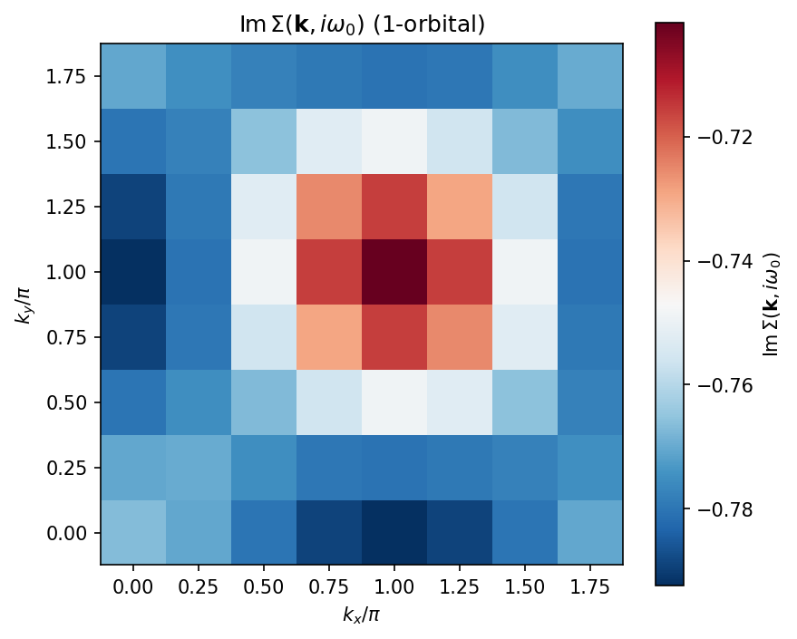
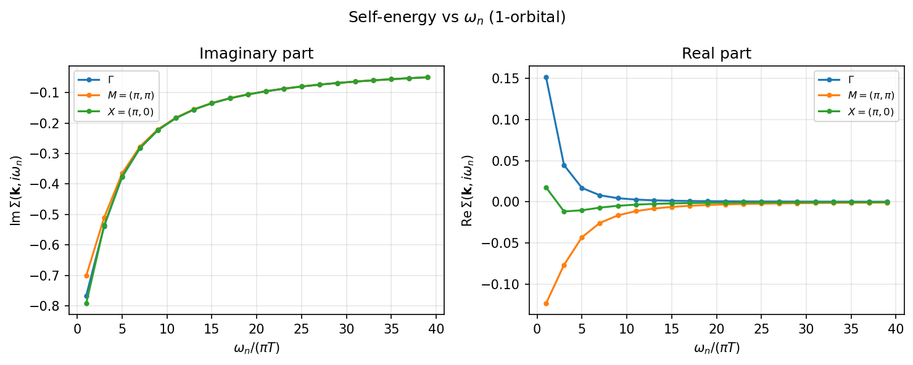
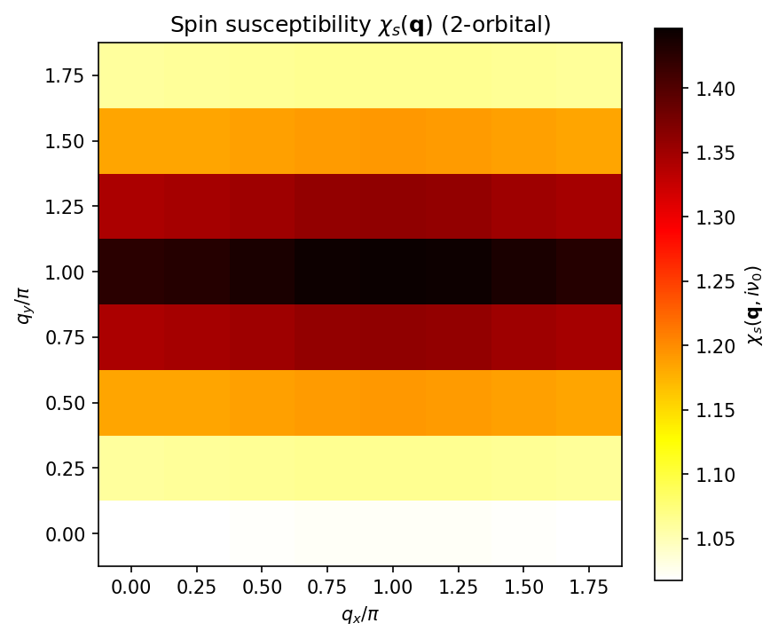
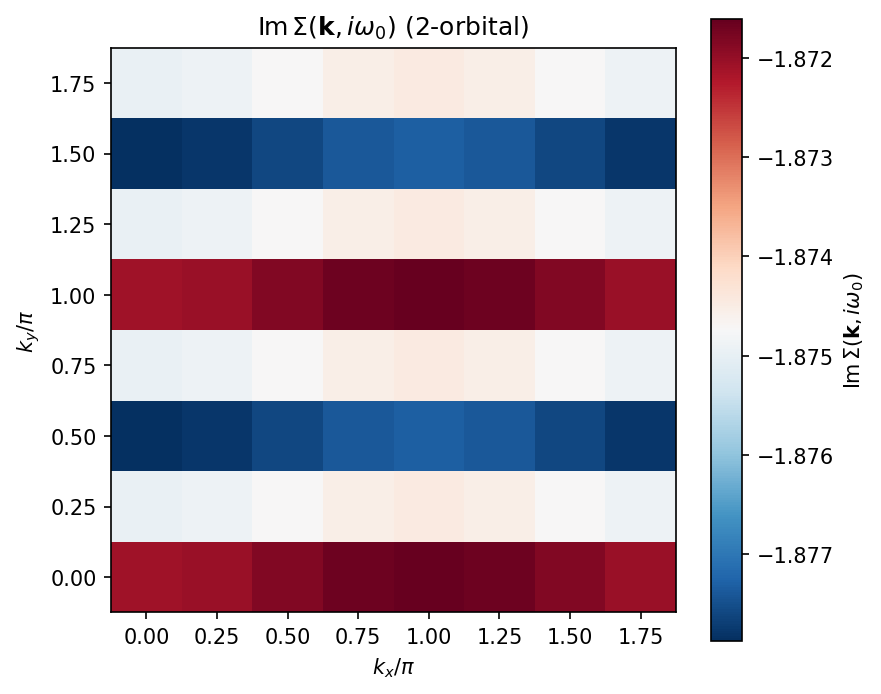
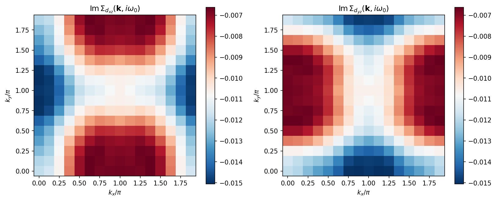

6.1. Tutorial: FLEX solver¶
This tutorial demonstrates how to use the FLEX (Fluctuation Exchange Approximation) solver in H-wave. FLEX extends RPA by using dressed (self-consistent) Green’s functions instead of bare ones, providing a more accurate description of correlated electron systems.
The sample files for this tutorial are located in
docs/en/source/flex/sample directory.
6.1.1. Overview¶
The FLEX approximation [1] is a self-consistent diagrammatic method for itinerant electron systems. Unlike RPA, which uses the bare Green’s function \(G_0\), FLEX iterates the following self-consistent loop until convergence:
Compute the dressed Green’s function \(G(\mathbf{k}, i\omega_n)\) from the Dyson equation.
Compute the bare susceptibility \(\chi_0(\mathbf{q}, i\nu_m)\) from the dressed \(G\).
Decompose the interaction into spin and charge channels.
Solve the RPA equations for spin/charge susceptibilities \(\chi_s\) and \(\chi_c\).
Construct the effective interaction \(V_{\mathrm{eff}}\).
Compute the self-energy \(\Sigma(\mathbf{k}, i\omega_n)\) via FFT convolution.
Check convergence; if not converged, go to step 1.
Note
When the electron number is fixed through filling / Ncond (rather
than a fixed mu), FLEX re-solves the chemical potential \(\mu\) from
the dressed Green function at every SCF iteration so that the target
filling is maintained self-consistently as the self-energy grows. A
FLEX._find_mu_dressed: mu = ... line is therefore printed each iteration,
and the converged \(\mu\) (and the exact iteration count) differ from a
calculation that keeps \(\mu\) fixed at its non-interacting value. All
iteration counts and convergence values shown in this tutorial are
illustrative and may vary slightly with the version and platform.
6.1.2. Theory¶
Dressed Green’s function¶
The dressed Green’s function is obtained from the Dyson equation:
where \(G_0^{-1}(\mathbf{k}, i\omega_n) = i\omega_n + \mu - H_0(\mathbf{k})\) is the inverse bare Green’s function.
Spin and charge susceptibilities¶
The bare susceptibility is computed from the dressed Green’s function:
The spin and charge susceptibilities are:
where \(U_s\) and \(U_c\) are the spin and charge interaction vertices decomposed from the full interaction Hamiltonian. For the single-band Hubbard model, \(U_s = U_c = U\).
Effective interaction¶
The effective FLEX interaction combines spin and charge fluctuations [1]:
where \(W\) is the bare interaction vertex. \(\chi_0\) is subtracted once: at lowest order \(\chi_s = \chi_c = \chi_0\), so the bracket reduces to \(\chi_0\) and \(V_{\mathrm{eff}} = W \chi_0 W\) (the second-order \(U^2\) bubble). This single subtraction removes the double-counted second-order diagram contained in \(\chi_s\) and \(\chi_c\).
Self-energy¶
The self-energy is computed via convolution in real space and imaginary time:
This element-wise (Hadamard) product is efficiently evaluated using FFT.
Scope of the approximation¶
FLEX is a conserving (Baym–Kadanoff) approximation that resums the RPA particle–hole bubble and ladder series for the self-energy. It does not include the Aslamazov–Larkin (AL) or Maki–Thompson (MT) vertex corrections, in which the electron couples to two fluctuation propagators through a triangular fermion loop (mode–mode coupling). These higher-order corrections are outside the FLEX class and are not evaluated here. They can matter when charge/orbital fluctuations driven by two spin fluctuations are important (e.g. the orbital-fluctuation mechanism of Onari and Kontani [2]).
In addition, the default calc_scheme = "reduced" and "squashed"
schemes decompose the interaction via its density–density part for the
spin/charge vertices; off-diagonal (spin-flip Hund, pair-hopping) vertices
are reduced to their density–density component (a warning is emitted when
Exchange/PairHop interactions are supplied). Accordingly, in these
schemes “FLEX” means not exact: it is the density–density, AL/MT-free
fluctuation-exchange level of approximation.
The alternative calc_scheme = "general" instead retains the full
off-diagonal Kanamori vertices. It is a paramagnetic full-vertex
formulation following Mochizuki, Yanase, and Ogata (MYO) [3] (and
corroborated by Takimoto, Hotta, and Ueda (THU) [4]): the full matrix-form
spin (\(\hat{U}^s\)) and charge (\(\hat{U}^c\)) interaction matrices
are built in the MYO convention, the matrix RPA is solved for
\(\chi_s\)/\(\chi_c\), and the fluctuation interaction is assembled
as \(V = \tfrac{3}{2}\hat{U}^s\chi_s\hat{U}^s
+ \tfrac{1}{2}\hat{U}^c\chi_c\hat{U}^c
- \tfrac{1}{4}(\hat{U}^s+\hat{U}^c)\chi_0(\hat{U}^s+\hat{U}^c)\).
Under "general" the off-diagonal vertices are therefore not dropped
and the density–density reduction warning is suppressed. The AL/MT vertex
corrections noted above remain outside the FLEX class even in the
"general" scheme.
6.1.3. Sample 1: Single-orbital Hubbard model¶
Model¶
The first sample is a single-orbital Hubbard model on a two-dimensional square lattice at half filling (\(n = 1\)).
with nearest-neighbor hopping \(t = 1.0\), next-nearest-neighbor hopping \(t' = 0.5\), on-site Coulomb repulsion \(U = 4.0\), and temperature \(T = 0.5\).
This model is known to exhibit strong antiferromagnetic (AF) spin fluctuations with a peak at \(\mathbf{Q} = (\pi, \pi)\).
Prepare input files¶
The sample files are in docs/en/source/flex/sample/1orb/.
Parameter file (input.toml):
[log]
print_level = 1
[mode]
mode = "FLEX"
[mode.param]
T = 0.5
CellShape = [8, 8, 1]
SubShape = [1, 1, 1]
Nmat = 64
filling = 0.5
IterationMax = 100
Mix = 0.2
EPS = 6
[file]
[file.input]
path_to_input = "."
[file.input.interaction]
path_to_input = "."
Geometry = "geom.dat"
Transfer = "transfer.dat"
CoulombIntra = "coulombintra.dat"
[file.output]
path_to_output = "output"
chi0q = "chi0q"
chiq = "chiq"
sigma = "sigma"
green = "green"
energy = "energy.dat"
Key parameters:
mode = "FLEX": Selects the FLEX solver.T = 0.5: Temperature.CellShape = [8, 8, 1]: 8 x 8 k-point mesh for a 2D system.Nmat = 64: Number of Matsubara frequencies.filling = 0.5: target electron number per site (half filling). Specifyingfilling(orNcond) makes FLEX re-solve the chemical potential \(\mu\) from the dressed Green’s function at every SCF iteration so the filling is conserved as the self-energy grows; specifyingmuinstead holds it fixed.coeff_tail = 1.0(optional): high-frequency tail-acceleration coefficient for the Matsubara sums.coeff_tail = 1matches the exact \(1/(i\omega_n)\) coefficient of \(G\) (unitarity), so it accelerates convergence inNmatwithout biasing the result. Also supported by the RPA solver.IterationMax = 100: Maximum number of SCF iterations.Mix = 0.2: Mixing parameter for self-energy update (\(\Sigma_{\mathrm{new}} = (1 - \alpha)\Sigma_{\mathrm{old}} + \alpha\Sigma_{\mathrm{calc}}\)).EPS = 6: Convergence criterion \(10^{-6}\).
Geometry (geom.dat):
1.000000000000 0.000000000000 0.000000000000
0.000000000000 1.000000000000 0.000000000000
0.000000000000 0.000000000000 1.000000000000
1
0.000000000000000e+00 0.000000000000000e+00 0.000000000000000e+00
A single orbital at the origin.
Transfer integrals (transfer.dat):
Transfer in wannier90-like format for uhfk
1
9
1 1 1 1 1 1 1 1 1
-1 -1 0 1 1 0.500000000000 -0.000000000000
-1 0 0 1 1 1.000000000000 -0.000000000000
0 -1 0 1 1 1.000000000000 -0.000000000000
0 1 0 1 1 1.000000000000 0.000000000000
1 0 0 1 1 1.000000000000 0.000000000000
1 1 0 1 1 0.500000000000 0.000000000000
Nearest-neighbor (\(t = 1.0\)) and next-nearest-neighbor (\(t' = 0.5\)) hopping on the square lattice.
On-site interaction (coulombintra.dat):
CoulombIntra in wannier90-like format for uhfk
1
1
1
0 0 0 1 1 4.000000000000 0.000000000000
On-site Coulomb repulsion \(U = 4.0\).
Run the calculation¶
$ cd docs/en/source/flex/sample/1orb
$ hwave input.toml
The output log shows the SCF convergence:
FLEX iteration 1/100
FLEX._find_mu_dressed: mu = -0.398893
convergence: |dSigma|/|Sigma| = 1.000e+00
FLEX iteration 2/100
FLEX._find_mu_dressed: mu = -0.291966
convergence: |dSigma|/|Sigma| = 9.876e-01
...
FLEX iteration 64/100
FLEX._find_mu_dressed: mu = -0.249146
convergence: |dSigma|/|Sigma| = 9.241e-07
FLEX converged after 64 iterations
Results¶
After convergence, the solver produces the following output files
in the output directory:
chi0q.npz: Bare susceptibility \(\chi_0(\mathbf{q}, i\nu_m)\)chiq_s.npz: Spin susceptibility \(\chi_s(\mathbf{q}, i\nu_m)\)chiq_c.npz: Charge susceptibility \(\chi_c(\mathbf{q}, i\nu_m)\)chiq.npz: Combined susceptibility filesigma.npz: Self-energy \(\Sigma(\mathbf{k}, i\omega_n)\)green.npz: Dressed Green’s function \(G(\mathbf{k}, i\omega_n)\)energy.dat: Text file with the particle numberNCond, spinSz, and the convergedChemicalPotential\(\mu\).
Note
The energy.dat output (enabled by the energy key in
[file.output]) is written from the final dressed Green function. In
the fixed-\(\mu\) mode (specify mu instead of filling /
Ncond) its NCond line gives the particle number at that
\(\mu\), so running the solver at several fixed \(\mu\) values
traces the \(\mu\)-\(N\) relation. Sz is zero for a
paramagnetic (spin-free) calculation and non-zero only for
spin-dependent (spin-diagonal / spinful) runs.
Warm-starting the SCF loop (sigma_init)¶
By default FLEX starts the self-consistency loop from \(\Sigma = 0\).
Setting sigma_init in [file.input] to a sigma.npz written by an
earlier FLEX run instead seeds the loop from that self-energy:
[file.input]
sigma_init = "sigma.npz"
This is often decisive near a magnetic instability (low temperature, strong
spin fluctuations), where the \(\Sigma = 0\) transient makes the SCF
oscillate (the residual |dSigma|/|Sigma| stalls around 1 instead of
decreasing) and the run hits IterationMax without converging. Starting from
a converged neighbouring solution – for example, stepping the temperature down
and feeding each run the previous (higher-\(T\)) sigma.npz – begins the
iteration near the fixed point and avoids the oscillation. The seed must have
the same CellShape and Nmat as the current run (both are fail-fast
errors: sigma.npz records its CellShape, so even a same-volume
aspect-ratio change like [2,8,1] vs [4,4,1] is caught), so keep
Nmat and CellShape fixed across a continuation sweep.
Note
The sigma_init path is resolved relative to [file.input]
path_to_input, while the previous run wrote its sigma.npz under
[file.output] path_to_output. In a sweep, either copy the previous
sigma.npz into the input directory, or point sigma_init at the
previous output directory with a relative path, e.g.:
[file.input]
path_to_input = "."
sigma_init = "run_T0.50/output/sigma.npz"
Spin susceptibility \(\chi_s(\mathbf{q}, i\nu_0)\):

Fig. 6.1 Static spin susceptibility \(\chi_s(\mathbf{q})\) of the single-orbital Hubbard model at half filling. The peak at \(\mathbf{Q} = (\pi, \pi)\) indicates strong antiferromagnetic spin fluctuations, consistent with the nesting of the Fermi surface.¶
Self-energy \(\mathrm{Im}\,\Sigma(\mathbf{k}, i\omega_0)\):
{kind=link}

Fig. 6.2 Imaginary part of the self-energy at the lowest Matsubara frequency. The k-dependence reflects the scattering of quasiparticles by spin fluctuations, with stronger damping near the antiferromagnetic hot spots.¶
Self-energy vs Matsubara frequency:
{kind=link}

Fig. 6.3 Frequency dependence of the self-energy at selected k-points. The imaginary part \(\mathrm{Im}\,\Sigma(i\omega_n) < 0\) shows quasiparticle damping, while the \(1/\omega_n\) tail at high frequencies indicates Fermi liquid behavior.¶
6.1.4. Sample 2: Two-orbital Hubbard model¶
Model¶
The second sample is a two-orbital Hubbard model with inter-orbital Coulomb interaction and Hund’s coupling:
with \(U = 4.0\), \(V = 1.0\), \(J = 0.5\), and temperature \(T = 1.0\).
Prepare input files¶
The sample files are in docs/en/source/flex/sample/2orb/.
Parameter file (input.toml):
[log]
print_level = 1
[mode]
mode = "FLEX"
[mode.param]
T = 1.0
CellShape = [8, 8, 1]
SubShape = [1, 1, 1]
Nmat = 64
filling = 0.5
IterationMax = 200
Mix = 0.2
EPS = 6
[file]
[file.input]
path_to_input = "."
[file.input.interaction]
path_to_input = "."
Geometry = "geom.dat"
Transfer = "transfer.dat"
CoulombIntra = "coulombintra.dat"
CoulombInter = "coulombinter.dat"
Hund = "hund.dat"
[file.output]
path_to_output = "output"
chi0q = "chi0q"
chiq = "chiq"
sigma = "sigma"
green = "green"
energy = "energy.dat"
Key differences from the 1-orbital sample:
T = 1.0: Higher temperature for stability.IterationMax = 200: More iterations for multi-orbital convergence.Additional interaction files:
CoulombInterandHund.
Geometry (geom.dat):
1.000000000000 0.000000000000 0.000000000000
0.000000000000 1.000000000000 0.000000000000
0.000000000000 0.000000000000 1.000000000000
2
0.000000000000000e+00 0.000000000000000e+00 0.000000000000000e+00
5.000000000000000e-01 5.000000000000000e-01 0.000000000000000e+00
Two orbitals per unit cell.
Transfer integrals (transfer.dat):
Transfer in wannier90-like format for uhfk
2
9
1 1 1 1 1 1 1 1 1
0 1 0 1 1 1.000000000000 0.000000000000
0 -1 0 1 1 1.000000000000 0.000000000000
0 1 0 2 2 1.000000000000 0.000000000000
0 -1 0 2 2 1.000000000000 0.000000000000
0 0 0 1 2 0.500000000000 0.000000000000
-1 0 0 1 2 0.500000000000 0.000000000000
0 0 0 2 1 0.500000000000 0.000000000000
1 0 0 2 1 0.500000000000 0.000000000000
Intra-orbital hopping (\(t = 1.0\) along y) and inter-orbital hybridization (\(t' = 0.5\)).
On-site interaction (coulombintra.dat):
CoulombIntra in wannier90-like format for uhfk
2
1
1
0 0 0 1 1 4.000000000000 0.000000000000
0 0 0 2 2 4.000000000000 0.000000000000
Intra-orbital Coulomb \(U = 4.0\) on both orbitals.
Inter-orbital Coulomb (coulombinter.dat):
CoulombInter in wannier90-like format for uhfk
2
1
1
0 0 0 1 2 1.000000000000 0.000000000000
0 0 0 2 1 1.000000000000 0.000000000000
Inter-orbital Coulomb \(V = 1.0\).
Hund’s coupling (hund.dat):
Hund in wannier90-like format for uhfk
2
1
1
0 0 0 1 2 0.500000000000 0.000000000000
0 0 0 2 1 0.500000000000 0.000000000000
Hund’s coupling \(J = 0.5\).
Run the calculation¶
$ cd docs/en/source/flex/sample/2orb
$ hwave input.toml
FLEX iteration 1/200
FLEX._find_mu_dressed: mu = 0.000000
convergence: |dSigma|/|Sigma| = 1.000e+00
FLEX iteration 2/200
FLEX._find_mu_dressed: mu = 0.000000
convergence: |dSigma|/|Sigma| = 3.587e-01
...
FLEX iteration 59/200
FLEX._find_mu_dressed: mu = 0.000000
convergence: |dSigma|/|Sigma| = 8.870e-07
FLEX converged after 59 iterations
(This is a particle-hole symmetric half-filled model, so \(\mu = 0\).)
Results¶
Spin susceptibility \(\chi_s(\mathbf{q}, i\nu_0)\):
{kind=link}

Fig. 6.4 Static spin susceptibility of the two-orbital model. The peak at \(\mathbf{Q} = (\pi, \pi)\) is enhanced by Hund’s coupling, which promotes ferromagnetic alignment within each site while allowing antiferromagnetic inter-site correlations.¶
Self-energy \(\mathrm{Im}\,\Sigma(\mathbf{k}, i\omega_0)\):
{kind=link}

Fig. 6.5 Imaginary part of the self-energy for the two-orbital model. The orbital-dependent k-structure reflects the different scattering channels in the multi-orbital system.¶
Self-energy vs Matsubara frequency:

Fig. 6.6 Frequency dependence of the self-energy for the two-orbital model. The larger magnitude compared to the single-orbital case reflects the enhanced correlations from inter-orbital interactions.¶
6.1.5. Plotting¶
The figures above can be reproduced using the plotting script:
$ cd docs/en/source/flex/sample
$ python plot_results.py
Or from within a single sample directory:
$ cd docs/en/source/flex/sample/1orb
$ python ../plot_results.py
6.1.6. Output file format¶
The FLEX solver produces NumPy .npz files with the following contents:
chi0q.npz¶
chi0q: Bare susceptibility \(\chi_0(\mathbf{q}, i\nu_m)\), shape(nmat, nvol, nd, nd).freq_index: Matsubara frequency indices.wavevector_unit: k-point vectors.wavevector_index: Wavenum table.
chiq_s.npz, chiq_c.npz¶
chiq_s/chiq_c: Spin / charge susceptibility, same shape aschi0q.chi_convention: orbital-layout tag,"kuroki"for the reduced/squashed schemes (spin-orbital reduced layout) or"myo"for the general full-vertex scheme (orbital-pair layout). The Eliashberg loader (hwave_sc) uses this tag to interpret the orbital indices; it is essential for two-orbital systems, where the spin-orbital and orbital-pair dimensions coincide (both4) and shape alone is ambiguous.
sigma.npz¶
sigma: Self-energy \(\Sigma(\mathbf{k}, i\omega_n)\), shape(nblock, nmat, nvol, nd_block, nd_block)wherenblockis the number of spin blocks (1 for spin-free mode).
green.npz¶
green: Dressed Green’s function \(G(\mathbf{k}, i\omega_n)\), same shape assigma.
These output files can also be used as input for the
Eliashberg equation solver (hwave_sc) to analyze
superconducting instabilities. See Tutorial: Eliashberg equation solver for details.
6.1.7. FLEX-specific parameters¶
The FLEX solver accepts the following parameters in the
[mode.param] section:
Parameter |
Type |
Default |
Description |
|---|---|---|---|
|
int |
100 |
Maximum number of SCF iterations. |
|
float |
0.2 |
Mixing parameter \(\alpha\) for self-energy update. Smaller values give more stable convergence but slower progress. |
|
int/float |
6 |
Convergence criterion. If integer \(n\), the threshold is \(10^{-n}\). If float < 1, used directly as threshold. |
|
str |
“linear” |
Self-energy update scheme. |
|
int |
5 |
History depth \(m\) of the Anderson acceleration. Memory grows by \(2m\) sigma-sized arrays (kept on the device under GPU execution). |
|
bool |
false |
Set |
|
int |
1 |
Number of worker threads for the spatial FFTs (parallelized via
|
All other parameters (T, CellShape, Nmat, filling, etc.)
are shared with the RPA solver. See Parameter files for details.
Note
The FLEX solver accepts calc_scheme in "reduced", "squashed",
or "general". The "reduced" and "squashed" schemes consume the
reduced-shape susceptibility and reduce the interaction to its
density-density part. The "general" scheme is the paramagnetic
full-vertex path: it keeps the full Kanamori vertices (MYO formula, see
above) and suppresses the density-density reduction
warning, but it is spin-free only — it raises a ValueError for
spin_mode = "spin-diag" or "spinful" and rejects
enable_spin_orbital. It is also on-site only: every two-body term
(CoulombIntra/CoulombInter/Hund/Exchange/PairHop/Ising)
must have irvec = (0,0,0); an off-site entry raises a ValueError
(the MYO S/C matrices are built as q-independent constants). Exchange and
PairHop off-diagonal vertices are kept (the point of the scheme), but
PairLift contributes S=C=0 to the particle-hole vertex and is
inert (ignored with a warning). The general path writes chiq_s/
chiq_c in the MYO convention (tagged chi_convention="myo"), which
hwave_sc reads back automatically. In all schemes
calc_type = "ring+ladder" is not supported (the solver raises a
ValueError).
6.1.8. Sample 3: Iron pnictide 2-orbital model¶
Model¶
The third sample is a two-orbital minimal model for iron-based superconductors proposed by Raghu et al. [5] The model describes the Fe-As plane using \(d_{xz}\) and \(d_{yz}\) orbitals on a square lattice (1-Fe unit cell).
where
with \(t_1 = -1.0\), \(t_2 = 1.3\), \(t_3 = t_4 = -0.85\).
The interactions follow the Kanamori parameterization:
with \(U = 1.5\), \(J = J' = 0.25\), \(U' = U - 2J = 1.0\), at temperature \(T = 0.1\) and half filling (\(n = 2\)).
The Fermi surface consists of hole pockets at \(\Gamma\) and electron pockets at \(M = (\pi, 0)\) / \((0, \pi)\). The nesting between these pockets drives strong spin fluctuations at \(\mathbf{Q} = (\pi, 0)\), which is the hallmark of iron pnictides.
Prepare input files¶
The sample files are in docs/en/source/flex/sample/iron_2orb/.
Parameter file (input.toml):
[log]
print_level = 1
[mode]
mode = "FLEX"
[mode.param]
T = 0.1
CellShape = [16, 16, 1]
SubShape = [1, 1, 1]
Nmat = 128
filling = 0.5
IterationMax = 200
Mix = 0.2
EPS = 6
[file]
[file.input]
path_to_input = "."
[file.input.interaction]
path_to_input = "."
Geometry = "geom.dat"
Transfer = "transfer.dat"
CoulombIntra = "coulombintra.dat"
CoulombInter = "coulombinter.dat"
Hund = "hund.dat"
Exchange = "exchange.dat"
[file.output]
path_to_output = "output"
chi0q = "chi0q"
chiq = "chiq"
sigma = "sigma"
green = "green"
energy = "energy.dat"
Geometry (geom.dat):
1.000000000000 0.000000000000 0.000000000000
0.000000000000 1.000000000000 0.000000000000
0.000000000000 0.000000000000 1.000000000000
2
0.000000000000000e+00 0.000000000000000e+00 0.000000000000000e+00
0.000000000000000e+00 0.000000000000000e+00 0.000000000000000e+00
Two orbitals (\(d_{xz}\) and \(d_{yz}\)) at the same site.
Transfer integrals (transfer.dat):
Transfer for 2-orbital iron pnictide model (Raghu et al. PRB 77, 220503, 2008)
2
9
1 1 1 1 1 1 1 1 1
1 0 0 1 1 1.000000000000 0.000000000000
-1 0 0 1 1 1.000000000000 0.000000000000
0 1 0 1 1 -1.300000000000 0.000000000000
0 -1 0 1 1 -1.300000000000 0.000000000000
1 1 0 1 1 0.850000000000 0.000000000000
1 -1 0 1 1 0.850000000000 0.000000000000
-1 1 0 1 1 0.850000000000 0.000000000000
-1 -1 0 1 1 0.850000000000 0.000000000000
1 0 0 2 2 -1.300000000000 0.000000000000
-1 0 0 2 2 -1.300000000000 0.000000000000
0 1 0 2 2 1.000000000000 0.000000000000
0 -1 0 2 2 1.000000000000 0.000000000000
1 1 0 2 2 0.850000000000 0.000000000000
1 -1 0 2 2 0.850000000000 0.000000000000
-1 1 0 2 2 0.850000000000 0.000000000000
-1 -1 0 2 2 0.850000000000 0.000000000000
1 1 0 1 2 -0.850000000000 0.000000000000
1 -1 0 1 2 0.850000000000 0.000000000000
-1 1 0 1 2 0.850000000000 0.000000000000
-1 -1 0 1 2 -0.850000000000 0.000000000000
1 1 0 2 1 -0.850000000000 0.000000000000
1 -1 0 2 1 0.850000000000 0.000000000000
-1 1 0 2 1 0.850000000000 0.000000000000
-1 -1 0 2 1 -0.850000000000 0.000000000000
The hopping parameters produce the characteristic two-pocket Fermi surface.
Interactions:
CoulombIntra in wannier90-like format for uhfk
2
1
1
0 0 0 1 1 1.500000000000 0.000000000000
0 0 0 2 2 1.500000000000 0.000000000000
CoulombInter in wannier90-like format for uhfk
2
1
1
0 0 0 1 2 1.000000000000 0.000000000000
0 0 0 2 1 1.000000000000 0.000000000000
Hund in wannier90-like format for uhfk
2
1
1
0 0 0 1 2 0.250000000000 0.000000000000
0 0 0 2 1 0.250000000000 0.000000000000
Exchange in wannier90-like format for uhfk
2
1
1
0 0 0 1 2 0.250000000000 0.000000000000
0 0 0 2 1 0.250000000000 0.000000000000
Run the calculation¶
$ cd docs/en/source/flex/sample/iron_2orb
$ hwave input.toml
FLEX iteration 1/200
FLEX._find_mu_dressed: mu = 1.562757
convergence: |dSigma|/|Sigma| = 1.000e+00
FLEX iteration 2/200
FLEX._find_mu_dressed: mu = 1.551623
convergence: |dSigma|/|Sigma| = 7.139e-01
...
FLEX iteration 62/200
FLEX._find_mu_dressed: mu = 1.512917
convergence: |dSigma|/|Sigma| = 8.716e-07
FLEX converged after 62 iterations
Results¶
Spin and charge susceptibilities:

Fig. 6.7 Static spin susceptibility \(\chi_s(\mathbf{q})\) (left) and charge susceptibility \(\chi_c(\mathbf{q})\) (right). The spin susceptibility peaks at \(\mathbf{Q} = (\pi, 0)\) and \((0, \pi)\), reflecting the nesting between hole and electron Fermi pockets. This is qualitatively different from the single-band Hubbard model where \(\chi_s\) peaks at \((\pi, \pi)\).¶
Orbital-resolved self-energy:
{kind=link}

Fig. 6.8 Imaginary part of the self-energy at the lowest Matsubara frequency, resolved by orbital. The \(d_{xz}\) orbital shows stronger scattering along \(k_y\) direction, while \(d_{yz}\) shows stronger scattering along \(k_x\). This orbital anisotropy arises from the orbital character of the Fermi surface.¶
Self-energy vs Matsubara frequency:

Fig. 6.9 Frequency dependence of the orbital-resolved self-energy at high-symmetry k-points. At \(M = (\pi, 0)\), the \(d_{yz}\) orbital is more strongly damped than \(d_{xz}\), reflecting orbital-selective correlations.¶
Plotting script:
$ python plot_results.py
6.1.9. Sample 3b: Full-vertex (general) variant¶
The iron pnictide model above is also provided as a full-vertex variant
that selects calc_scheme = "general". It uses the same model and
interaction files (CoulombIntra, CoulombInter, Hund,
Exchange), but retains the full off-diagonal Kanamori vertices (the
spin-flip Hund and pair-hopping / exchange terms) instead of reducing them
to their density–density part. This is the paramagnetic full-vertex MYO
formulation [3] (corroborated by THU [4]), and the density–density
reduction warning is therefore suppressed.
This variant is appropriate for multi-orbital models in which the
Hund/exchange/pair-hopping off-diagonal vertices matter — such as the iron
pnictide model here — and a paramagnetic FLEX is sufficient. Note that the
"general" scheme is spin-free only (it raises a ValueError for
spin_mode = "spin-diag"/"spinful" and does not support
enable_spin_orbital) and does not support calc_type = "ring+ladder".
The sample files are in
docs/en/source/flex/sample/iron_2orb_general/.
Parameter file (input.toml):
[log]
print_level = 1
[mode]
mode = "FLEX"
calc_scheme = "general"
[mode.param]
T = 0.1
CellShape = [16, 16, 1]
SubShape = [1, 1, 1]
Nmat = 128
filling = 0.5
IterationMax = 200
Mix = 0.2
EPS = 6
[file]
[file.input]
path_to_input = "."
[file.input.interaction]
path_to_input = "."
Geometry = "geom.dat"
Transfer = "transfer.dat"
CoulombIntra = "coulombintra.dat"
CoulombInter = "coulombinter.dat"
Hund = "hund.dat"
Exchange = "exchange.dat"
[file.output]
path_to_output = "output"
chi0q = "chi0q"
chiq = "chiq"
sigma = "sigma"
green = "green"
energy = "energy.dat"
The only essential change from Sample 3 is calc_scheme = "general" in
the [mode] section; the geometry, transfer, and interaction files are
identical.
6.1.10. Tips¶
Convergence issues: If the SCF loop does not converge, try reducing
Mix(e.g., 0.1 or 0.05) or increasing the temperature. Strong correlations near magnetic instabilities can make convergence difficult.Matsubara frequencies: A sufficient number of Matsubara frequencies (
Nmat) is needed for accurate results. A good rule of thumb is \(N_{\mathrm{mat}} \geq 10 / T\) to capture the low-frequency structure.k-point mesh: The mesh size (
CellShape) should be large enough to resolve the momentum structure of susceptibilities and self-energy. For 2D systems, 8x8 is sufficient for qualitative results; 32x32 or larger is recommended for quantitative calculations.Computational cost: FLEX is more expensive than RPA due to the SCF loop. The cost scales as \(O(N_{\mathrm{iter}} \times N_k \times N_\omega \times N_d^3)\) where \(N_d = N_{\mathrm{orb}} \times N_{\mathrm{spin}}\).
Connection to Eliashberg equation: The FLEX output files (
chiq_s.npzandchiq_c.npz) can be used withhwave_scby settingchi0q_mode = "flex"in the[eliashberg]section. This enables analysis of superconducting instabilities with FLEX-level spin and charge fluctuations.
6.1.11. Implementation details and limitations¶
Supported interaction types¶
The FLEX solver supports the following interaction types:
Interaction type |
Support |
Notes |
|---|---|---|
|
Yes |
Intra-orbital Coulomb repulsion \(U\) |
|
Yes |
Inter-orbital Coulomb repulsion \(V\) |
|
Yes |
Hund’s coupling \(J\) |
|
Partial |
Exchange interaction \(J'\) (density-density part only; off-diagonal spin-flip/pair vertices are dropped) |
|
Yes |
Ising-type interaction |
|
Partial |
Pair lifting interaction (density-density part only; off-diagonal vertices are dropped) |
|
Partial |
Pair hopping interaction (density-density part only; off-diagonal vertices are dropped) |
|
No |
Arbitrary 4-body interaction (UHFr solver only) |
Note
The InterAll format is not available in k-space solvers (RPA/FLEX).
Interactions described by InterAll should be decomposed into
the individual interaction types listed above.
Momentum-dependent interactions (long-range interactions)¶
Interactions are specified in Wannier90-format input files.
Each line has the format rx ry rz a b Re Im,
where (rx, ry, rz) is a real-space lattice vector.
On-site interactions (only rx = ry = rz = 0):
After FFT, these become momentum-independent interactions \(W(\mathbf{q}) = W_0\), constant across all q-points. All current sample files use this case.
Long-range interactions (with non-zero (rx, ry, rz)):
These are automatically transformed into momentum-dependent interactions via FFT:
For example, to include nearest-neighbor Coulomb interactions,
add entries with lattice vectors (1,0,0), (0,1,0), etc.
to the interaction file.
Note
There is no built-in facility to automatically discretize a continuous \(1/r\) Coulomb potential. Users must explicitly specify the interaction value at each lattice point in the input file.
Spin-charge channel decomposition constraint¶
The FLEX solver decomposes the interaction tensor into spin and charge channels for the self-energy calculation. This decomposition reduces the 4-body interaction tensor \(W_{\alpha\sigma,\beta\sigma',\alpha\sigma,\beta\sigma'}\) to a 2-body contracted form \(W_{\alpha\sigma,\beta\sigma'}\).
Specifically, same-spin and cross-spin components are separated:
where \(W_{\mathrm{same}}\) is the same-spin interaction and \(W_{\mathrm{cross}}\) is the cross-spin interaction.
This contraction is exact for density-density type interactions.
CoulombIntra, CoulombInter, Hund, and Ising
are all density-density type and are handled correctly.
Exchange, PairLift, and PairHop are not purely
density-density: only their density-density part is retained, while
their off-diagonal (spin-flip / pair-scattering) vertices are dropped
in the reduction. The solver emits a warning when such interactions are
present, so the user is aware of this approximation.
Spin degrees of freedom (spin-free mode)¶
The FLEX solver operates in spin-free mode by default. This mode assumes SU(2) spin symmetry to reduce computational cost.
In spin-free mode:
Green’s functions are represented in orbital space only (shape:
(1, nmat, nvol, norb, norb)).Susceptibilities and effective interactions are internally inflated to spin-orbital space (
nd = norb × ns) for computation.After self-energy computation, the properties guaranteed by SU(2) symmetry — \(\Sigma_{\uparrow\uparrow} = \Sigma_{\downarrow\downarrow}\) and \(\Sigma_{\uparrow\downarrow} = 0\) — are used to contract back to orbital space.
Note
Spin-free mode assumes a paramagnetic state (no magnetic order). Describing magnetically ordered phases requires an extension that treats spin degrees of freedom explicitly.